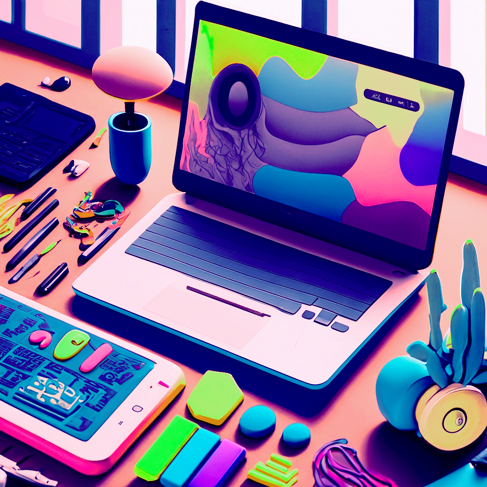

<article class="_container_all">
  <section class="_container">
    <div class="_container_title">
      <mat-icon class="_icon_nav">local_florist</mat-icon>
      <h1 class="_title">designing</h1>
    </div>
    <div *ngFor="let card of cards">
      <div class="_card">
        <h4 class="_card_title">{{ card.tittle }}</h4>
        <p class="_text_card">
          <ng-container *ngIf="card.showFullText; else truncatedText">
            {{ card.text }}
          </ng-container>
          <ng-template #truncatedText>
            {{ card.text.length > 150 ? (card.text.slice(0, 150) + '...') : card.text }}
          </ng-template>
          <span *ngIf="card.text.length > 150">
            <a class="_see_more" (click)="toggleText(card)">
              {{ card.showFullText ? 'Ver menos' : 'Ver más' }}
            </a>
          </span>
        </p>
        <!-- <p class="_text_card" [innerHTML]="card.showFullText ? card.text : card.truncatedText">
          <span *ngIf="card.text.length > 150">
            <a class="_see_more" (click)="toggleText(card)">
              {{ card.showFullText ? 'Ver menos' : 'Ver más' }}
            </a>
          </span>
        </p> -->
        <!-- <p class="_text_card" [innerHTML]="card.text | highlight:card.wordsToHighlight">
          {{ card.showFullText ? card.text : (card.text.length > 150 ? (card.text.slice(0, 150) + '...') : card.text) }}
          <span *ngIf="card.text.length > 150">
            <a class="_see_more" (click)="toggleText(card)">
              {{ card.showFullText ? 'Ver menos' : 'Ver más' }}
            </a>
          </span>
        </p> -->
      </div>
      
    </div>
<!-- <div class="_container_cards">
  <div class="_card" style="width: 18rem;">
    <div class="_card_body">
      <h4 class="_card_title">Graphic Design</h4>
    
      <p class="_card_text">
        Graphic design is a creative and communicative discipline that is responsible 
        for creating and combining visual elements, such as images, colors, typographies 
        and shapes, to convey clear and effective messages. Its main objective is to 
        communicate visually, through attractive and functional designs, either in print or digital media.
        Graphic design covers various areas, such as corporate identity, logo design, 
        editorial layout, web design and advertising, among others. Its application is 
        present in a wide variety of fields, from the business and advertising field to 
        the artistic and cultural.
      </p>
      <button class="_consult">
        <mat-icon class="_icon_contact">chat_bubble_outline</mat-icon>
        Consult!
      </button>    
    </div>
    
  </div>
  <div class="_card" style="width: 18rem;">
    
    <div class="_card_body">
      <h4 class="_card_title">UX | UI</h4>
      <p class="_card_text">
        Graphic design is a creative and communicative discipline that is responsible 
        for creating and combining visual elements, such as images, colors, typographies 
        and shapes, to convey clear and effective messages. Its main objective is to 
        communicate visually, through attractive and functional designs, either in print or digital media.
        Graphic design covers various areas, such as corporate identity, logo design, 
        editorial layout, web design and advertising, among others. Its application is 
        present in a wide variety of fields, from the business and advertising field to 
        the artistic and cultural.
      </p>
      <p class="_card_text">
        El diseño UX/UI (Experiencia de Usuario/Interfaz de Usuario) es una disciplina 
        que se enfoca en crear experiencias digitales agradables, intuitivas y satisfactorias 
        para los usuarios. El diseño UX se centra en comprender las necesidades, expectativas 
        y comportamientos de los usuarios, así como en optimizar la usabilidad y la facilidad 
        de uso de un producto o servicio digital. Por otro lado, el diseño UI se refiere a la 
        apariencia visual y la interacción de los elementos en la interfaz, incluyendo el 
        diseño de botones, iconos, tipografías y esquemas de color. El objetivo del diseño 
        UX/UI es lograr que los usuarios puedan interactuar de manera eficiente y placentera 
        con un producto digital, asegurando que cumpla con sus objetivos y les brinde una 
        experiencia positiva y satisfactoria.
      </p> 
      <a href="#" class="_btn_card">Go somewhere</a>
    </div>
  </div>
  <div class="_card" style="width: 18rem;">
    
    <div class="_card_body">
      <h5 class="_card_title">Diseño Gráfico</h5>
      <p class="_card_text">Some quick example text to build on the card title and make up the bulk of the card's content.</p>
      <a href="#" class="_btn_card">Go somewhere</a>
    </div>
  </div>

</div> -->
    <!-- <div class="_container_title">
      <mat-icon class="_icon_nav">local_florist</mat-icon>
      <h1 class="_title">designing</h1>
    </div>
    <div class="_container_cards">
      <section class="_container_item" (click)="showMoreUxUi()">
        <h2 class="_item" >
          ux | ui
        </h2>
      </section>
      <div class="_container_info" [hidden]="!visibleUxUi">

        <p class="_info">
          <span>UX/UI</span> is the design of the <span>user experience, and interface 
        of a digital product.</span> It combines aspects such as <span>research, 
        testing, development, content and prototyping to create solutions</span> 
        that meet the needs and expectations of users. It also designs the 
        <span>visual and interactive elements</span> that facilitate and enrich the 
        navigation and use of the product.
        </p>
        <div class="_container_image">
          
        </div>
        <figure class="_container_realizations">
          <div class="_container_realization" (click)="routingVlife()">
            
            <p class="_name_realization">v-life</p>
          </div>
          <div class="_container_realization">
            
            <p class="_name_realization">travel-log</p>
          </div>
          <div class="_container_realization">
            
            <p class="_name_realization">nighx</p>
          </div>
          <div class="_container_realization">
            
            <p class="_name_realization">hunt</p>
          </div>   
        </figure><hr>
      </div>
      <article class="_container_all_info">
        <section class="_container_item" (click)="showMoreGraph()">
          <h2 class="_item" >
            graphic
          </h2>
        </section>
          <div class="_container_info" [hidden]="!visibleGraph">       
            <p class="_info"><span>Graphic Design </span>
              - Profession and academic discipline whose activity consists of 
              <span>projecting visual communication</span> aimed at
              <span>broadcast specific messages</span> to social groups with <span>targets
              determined. It is applied to produce a homogeneous brand discourse generating
              visual identity</span> to people, products or services.
            </p>
          </div>
        </article>

      <section class="_container_item" (click)="showMoreIllustration()">
        <h2 class="_item" >
          motion
        </h2>
      </section>

      <div class="_container_info" [hidden]="!visibleIllustration">
        <p class="_info">
          The term experimentation, its application and its purpose were born in the <span>world of science.</span>
          Experimentation is understood as <span>inquiry based on voluntary provocation</span>
          of certain phenomena to confirm some hypothesis.
          Experimentation is the <span>directed observation </span> that completes the <span> spontaneous observation.</span>
        </p>
       
        <div class="_container_button">
          <button class="_button_more" routerLink="illustration-sketch">
            <mat-icon class="_icon_button">work_outline</mat-icon>portafolio
          </button>
        </div>
        <figure class="_container_realizations">

        </figure>
      </div>
    </div> -->
    <app-footer class="_footer"></app-footer>
  </section>
</article>